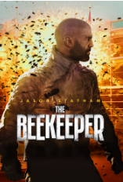
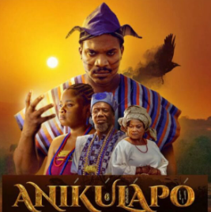

The Beekeeper
Movie Summary
One man's brutal campaign for vengeance takes on national stakes after
it's revealed he's a former
operative of a powerful and clandestine organization known as
Beekeepers.
My Review
I will give this movie a 9/10 rating. It's is action packed, a
thriller and has everything I want to
see in a movie. The antagonist also played his role effortlessly.
Anikulapo
Movie Summary
After an affair with the king's wife leads to his demise, a zealous
traveller encounters a mystical
bird with the power to give him another chance.
My Review
I will give this movie a 8/10 rating. It's is an interesting
indigenous movie with fictional cultural belief. Aside this, the
camera angle are very interesting to see. The actors also put in a lot
of work to perfect there character. a good movie all round.
Olufunmilayo Ransome-Kuti

Movie Summary
Funmilayo Ransome-Kuti (born October 25, 1900, Abeokuta, Egbaland [now
in Nigeria]—died Lagos, Nigeria)
was a Nigerian feminist and political leader who was the leading
advocate of women's rights in her country during
the first half
of the 20th century.
My Review
This movie is a 8/10 rating for me. I am not only intrigued by the
perfect role play by the actor but the story line itself.
Olufumnilayo is a very brake and couragous woman whom against all odd
forth for the freedom of other women during
her time. The
society needs more people like her. selfless and brave.